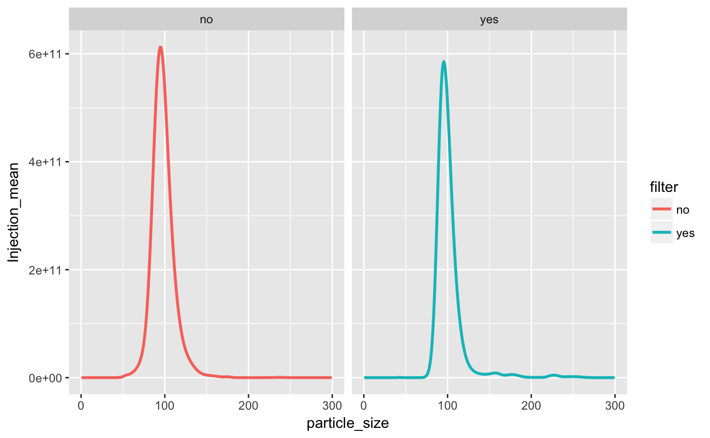

tidyNano Vignette
Sean Nguyen
2020-06-16
tidyNano.RmdtidyNano Vignette
tidyNano is a package that imports raw Nanosight data and faciliates the process of tidying the data so it is suitable for visualizing with ggplot2 and data manipulation with dplyr. tidyNano also has functions to facilitate the rapid generation of summary statistics by groups to assist with calculating technical replicate and within group mean, standard deviation, and standard error.
##nanoimport This is an example raw Nanosight .csv output file and is not easily imported with read.csv()
file <- system.file("extdata", "beads.csv", package = "tidyNano") read.csv(file) %>% head() #> NTA.Experiment.Summary.File X X.1 X.2 X.3 X.4 X.5 #> 1 Created with NTA 3.2 Dev Build 3.2.16 #> 2 #> 3 [Experiment Details] #> 4 Software Version Unknown #> 5 Experiment Name std_combined.nano #> 6 Sample Name #> X.6 X.7 X.8 X.9 X.10 X.11 X.12 X.13 #> 1 #> 2 #> 3 #> 4 #> 5 #> 6
nanoimport is a function that extracts the particle data from raw a nanosight .csv file and creates a dataframe that is suitable for cleaning within R. Note: This assumes you added the dilution factor when you named your samples during acquistion.
data <- nanoimport(file) #> NTA version: 3.2 #> Sample name: #> Dilution line no: 42 #> Warning in function_list[[k]](value): NAs introduced by coercion #> Dilution factor detected: NA #> Auto name = FALSE #> Custom name: NULL #> Dilution value: 1 (Didn't parse) head(data) #> particle_size std_10000_yes_2_00 std_10000_yes_2_01 std_10000_yes_2_02 #> 1 0.5 0 0 0 #> 2 1.5 0 0 0 #> 3 2.5 0 0 0 #> 4 3.5 0 0 0 #> 5 4.5 0 0 0 #> 6 5.5 0 0 0 #> std_10000_no_2_00 std_10000_no_2_01 std_10000_no_2_02 std_10000_yes_1_00 #> 1 0 0 0 0 #> 2 0 0 0 0 #> 3 0 0 0 0 #> 4 0 0 0 0 #> 5 0 0 0 0 #> 6 0 0 0 0 #> std_10000_yes_1_01 std_10000_yes_1_02 std_10000_no_1_00 std_10000_no_1_01 #> 1 0 0 0 0 #> 2 0 0 0 0 #> 3 0 0 0 0 #> 4 0 0 0 0 #> 5 0 0 0 0 #> 6 0 0 0 0 #> std_10000_no_1_02 #> 1 0 #> 2 0 #> 3 0 #> 4 0 #> 5 0 #> 6 0
nanoimport without dilution factor in the sample name
If you didn’t include your dilution factor in the sample name you can use the argument auto_name == TRUE within the nanoimport() function.
file2 <- system.file("extdata", "beads2.csv", package = "tidyNano") data2 <- nanoimport(file2, auto_name = TRUE) #> NTA version: 3.4 #> Sample name: #> Dilution line no: 44 #> Dilution factor detected: 10000 #> Auto name: _10000 #> Custom name: NULL #> Dilution value: 10000 head(data2) #> particle_size stdv34_00_10000 stdv34_01_10000 stdv34_02_10000 stdv34_03_10000 #> 1 0.5 0 0 0 0 #> 2 1.5 0 0 0 0 #> 3 2.5 0 0 0 0 #> 4 3.5 0 0 0 0 #> 5 4.5 0 0 0 0 #> 6 5.5 0 0 0 0 #> stdv34_04_10000 #> 1 0 #> 2 0 #> 3 0 #> 4 0 #> 5 0 #> 6 0
You can even add a custom name to append extra information to your sample columns using the custom_name() argument.
custom_name_data2 <- nanoimport(file2, auto_name = TRUE, custom_name = "YourLabelHere") #> NTA version: 3.4 #> Sample name: #> Dilution line no: 44 #> Dilution factor detected: 10000 #> Auto name: _YourLabelHere_10000 #> Custom name: YourLabelHere #> Dilution value: 10000 head(custom_name_data2) #> particle_size stdv34_00_YourLabelHere_10000 stdv34_01_YourLabelHere_10000 #> 1 0.5 0 0 #> 2 1.5 0 0 #> 3 2.5 0 0 #> 4 3.5 0 0 #> 5 4.5 0 0 #> 6 5.5 0 0 #> stdv34_02_YourLabelHere_10000 stdv34_03_YourLabelHere_10000 #> 1 0 0 #> 2 0 0 #> 3 0 0 #> 4 0 0 #> 5 0 0 #> 6 0 0 #> stdv34_04_YourLabelHere_10000 #> 1 0 #> 2 0 #> 3 0 #> 4 0 #> 5 0 #> 6 0
nanotidy
nanotidy is a function that facilitates the conversion of a dataframe to make it tidy for easy data visualization with ggplot2 and data manipulation with dplyr.
tidy_data <- nanoimport(file) %>% nanotidy( sep_var = c("Sample", "Dilution","Filter", "Injection","Tech_rep")) #> NTA version: 3.2 #> Sample name: #> Dilution line no: 42 #> Warning in function_list[[k]](value): NAs introduced by coercion #> Dilution factor detected: NA #> Auto name = FALSE #> Custom name: NULL #> Dilution value: 1 (Didn't parse) head(tidy_data) #> particle_size Sample Dilution Filter Injection Tech_rep Count True_count #> 1 0.5 std 10000 yes 2 0 0 0 #> 2 1.5 std 10000 yes 2 0 0 0 #> 3 2.5 std 10000 yes 2 0 0 0 #> 4 3.5 std 10000 yes 2 0 0 0 #> 5 4.5 std 10000 yes 2 0 0 0 #> 6 5.5 std 10000 yes 2 0 0 0
Once the data is in the tidy format it can be easily visualized using existing libraries such as ggplot2.
tidy_data %>% ggplot(aes(x = particle_size, y = True_count, color = Tech_rep)) + geom_line(size = 1) + facet_wrap(Injection ~ Filter)

nanolyze
nanolyze is a function that is able to quickly summarize data by groups. The first argument is the number of variables to group by. The second argument name is the prefix that is added to the mean, sd and se summary, the default name is “Param”. The third argument is param_var which is the numeric variable that is to be summarized. The output of this function is a dataframe of the grouped variables, column N with number of values that were summarized, column mean for the mean, column sd for standard deviation, and column se for standard error of the mean. Here we see that the technical replicates will be averaged.
Tech_avg_data <- tidy_data %>% nanolyze(particle_size, Sample, Dilution, Filter, Injection, name = "Tech_rep", param_var = True_count) head(Tech_avg_data) #> # A tibble: 6 x 9 #> particle_size Sample Dilution Filter Injection Tech_rep_N Tech_rep_mean #> <dbl> <fct> <dbl> <fct> <fct> <int> <dbl> #> 1 0.5 std 10000 no 1 3 0 #> 2 0.5 std 10000 no 2 3 0 #> 3 0.5 std 10000 yes 1 3 0 #> 4 0.5 std 10000 yes 2 3 0 #> 5 1.5 std 10000 no 1 3 0 #> 6 1.5 std 10000 no 2 3 0 #> # … with 2 more variables: Tech_rep_sd <dbl>, Tech_rep_se <dbl>
The technical average data can be visualized with ggpplot2.
Tech_avg_data %>% ggplot(aes(x = particle_size, y = Tech_rep_mean, color = Injection)) + geom_line( size = 1) + facet_wrap(~ Filter) + theme_bw()

In this experiment, a sample was read twice by the Nanosight and thus we can average the means by Injection to obtain a single mean value by using the nanolyze function again. Notice the different use of the name and param_var arguments.
Injection_avg_data <- Tech_avg_data %>% nanolyze(particle_size, Sample, Dilution, Filter, name = "Injection", param_var = Tech_rep_mean) head(Injection_avg_data) #> # A tibble: 6 x 8 #> particle_size Sample Dilution Filter Injection_N Injection_mean Injection_sd #> <dbl> <fct> <dbl> <fct> <int> <dbl> <dbl> #> 1 0.5 std 10000 no 2 0 0 #> 2 0.5 std 10000 yes 2 0 0 #> 3 1.5 std 10000 no 2 0 0 #> 4 1.5 std 10000 yes 2 0 0 #> 5 2.5 std 10000 no 2 0 0 #> 6 2.5 std 10000 yes 2 0 0 #> # … with 1 more variable: Injection_se <dbl>
We can again use ggplot2 to visualize the mean injection data.
Injection_avg_data %>% ggplot(aes(x = particle_size, y = Injection_mean, color = Filter)) + geom_line( size = 1) + facet_wrap(~Filter)

We can also use dplyr to filter on values less than 300nm easily.
Injection_avg_data %>% filter(particle_size <300) %>% ggplot(aes(x = particle_size, y = Injection_mean, color = Filter)) + geom_line( size = 1) + facet_wrap(~Filter)

MY FIGURE CAPTION
nanocount
nanocount is a function that is able to calculate the total sum of particles by group.
Injection_avg_data %>% nanocount(Sample, Dilution, Filter, param_var = Injection_mean) #> # A tibble: 2 x 5 #> Sample Dilution Filter Particle_N Particle_count #> <fct> <dbl> <fct> <int> <dbl> #> 1 std 10000 no 1000 1.64e13 #> 2 std 10000 yes 1000 1.29e13
We can also use dplyr verbs before nanocount. To calculate the total number of particles less than 100nm the filter command can be used.